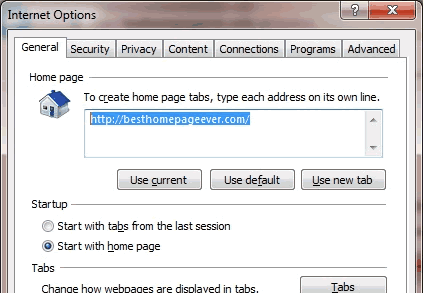
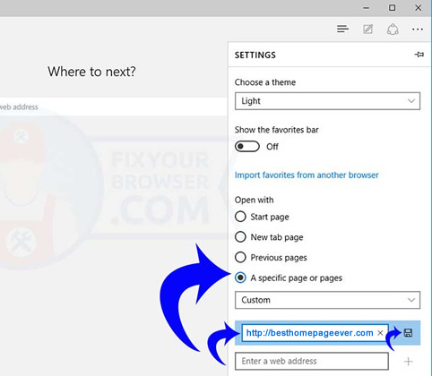

Internet Explorer

Internet Explorer (2 Steps):
Step 1.
Click the Tools tab (ALT-T). Select Internet Options, at or near the bottom of the list.

Step 2.
Enter or copy/paste http://besthomepageever.com into your homepage default.
Be sure Start with home page is selected under 'Startup'.

You're Done.
Click here to return to BestHomepageEver.
Microsoft Edge

Microsoft Edge
Step 1.
Click the ellipsis (...) menu in the upper right. Scroll down to the Settings button.
Step 2.
Under the heading "Open with", choose the radio button for "A specific page or pages", then from the pull down menu, choose "Custom".
Step 3.
Directly under the Custom pull down menu option, type in http://besthomepageever.com, then hit ENTER, +, or the save sign to submit.

Important:
Remove any other pages listed by clicking the "X" to the right (i.e. MSN, about:start, etc.).
You're all set.
Click here to return to BestHomepageEver.